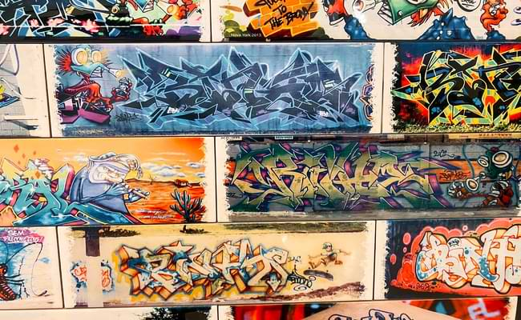
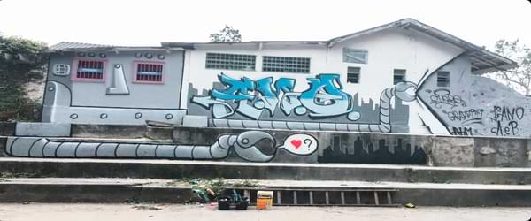

Historia do Grafite

O Grafite
Pelas ruas de Nova lorque em meados dos anos 70, o movimento do grafite e da pichação nasceu por influência do Hip Hop como uma forma de manifestar a cultura negra norte americana e lutar pelo respeito à diversidade étnica. Apesar de que, haja registros de expressões artísticas em paredes muito antes disso, o que diferencia o Grafite é que, em sua composição e origem, as pinturas estão sempre ligadas à uma crítica social.
Apesar do Grafite e a Pichação terem motivações parecidas, sendo a principal delas a manifestação em espaço público sendo ela autorizada ou não, a pichação não apresenta ter nenhuma relação com a obrigação artísticas, sendo assim, uma forma mais rápida e direta de protestar, diferentemente do Grafite.
Embora o Grafite seja frequentemente associado a atos de vandalismo, é inegável que ele desempenhe um papel significativo na cultura contemporânea, o grafite desafia os limites entre a arte e o vandalismo, provocando discussões sociais e estéticas. Visto por muitos anos como uma arte marginal, que deslustrar os prédios das cidades, o grafite se reconstruiu e começou a ser reconhecido quando foi utilizado por artistas plásticos.
Pichações x Grafite
Através das análises a Pichação e o Grafite apresentam características distintas. Fica claro que os elementos gráficos dessas manifestações são elementos diversos, sendo fácil distinguir ambas. O Professor e Pesquisador Geraldo Honorato (2009, p.2 e 3) é enfático ao afirmar: “Na forma de realização, o grafite se difere da pichação por ter como objetivo um resultado mais elaborado e preocupado com questões técnicas e compositivas, já a pichação se apresenta como uma ação mais rápida, gestual, desprovida da intenção de elaborações artísticas.”.

Seguindo essa mesma linha de raciocínio, podemos afirmar que a Pichação tem como objetivo incomodar, marcar território. Por isso, é praticada por pessoas que querem expressar suas ideias, opiniões, emoções, vertentes sociais ou políticas nas ruas, querem desafiar o sistema, se apropriar de espaços públicos e no Brasil é crime. Segundo Caio de Souza Mendes, Advogado Criminalista e Especialista em Artigo para o Site Jusbrasil “O grafite é tão respeitado comparado a pichação, que temos várias empresas no segmento que criam obras de grafite para residências e até mesmo em repartições públicas. Ao contrário do grafite, no Brasil, a pichação é considerada como crime ambiental, nos termos do artigo 65 da Lei 9.605/98 (Lei dos Crimes Ambientais), que estipula pena de detenção de 03 meses a 01 ano, e multa, para quem pichar ou por qualquer meio conspurcar edificação ou monumento urbano.”. Com isso, conseguimos concluir que apesar que a Pichação seja considerada como uma forma de expressão e resistência, existem alternativas legais para a manifestação das ideias, e que não é necessário danificar propriedades ou infringir a lei para expressar seus pensamentos.